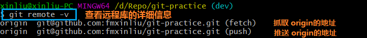
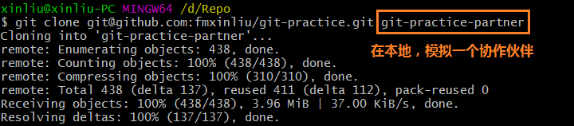
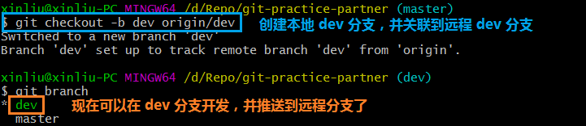
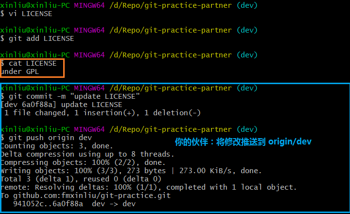
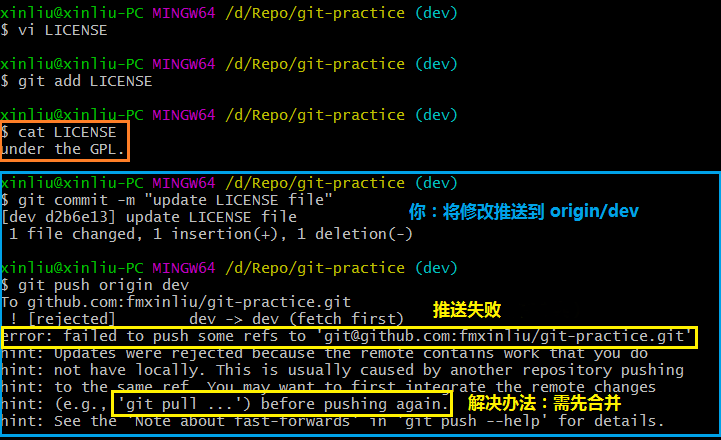
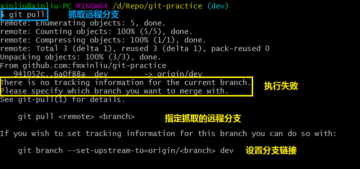
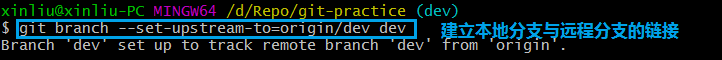
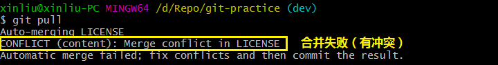
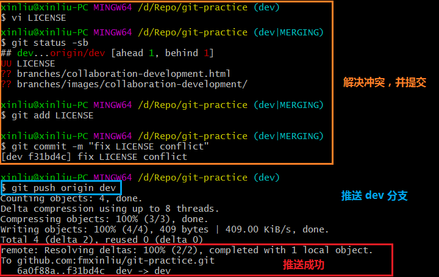

上一篇《Feature分支》
下一篇《Rebase》
Git自动把本地的master分支和远程的master分支对应起来了，并且，远程仓库的默认名称是origin。
如果没有推送权限，就看不到push的地址。
推送分支，就是把该分支上的所有本地提交推送到远程库。推送时，要指定本地分支，这样，Git就会把该分支推送到远程库对应的远程分支上。比如推送master分支：
git push origin master如果要推送其他分支，比如dev，就改成：
git push origin dev但是，并不是一定要把本地分支往远程推送，那么，哪些分支需要推送，哪些不需要呢？
◆ master分支是主分支，因此要时刻与远程同步；
◆ dev分支是开发分支，团队所有成员都需要在上面工作，所以也需要与远程同步；
◆ bug分支只用于在本地修复bug，就没必要推到远程了，除非老板要看看你每周到底修复了几个bug；
◆ feature分支是否推到远程，取决于你是否和你的小伙伴合作在上面开发。
master和dev分支上推送各自的修改。现在，模拟一个小伙伴，可以在另一台电脑（注意要把SSH Key添加到GitHub）或者在同一台电脑的另一个目录下克隆：

当你的小伙伴从远程库clone时，默认情况下，只能看到本地的master分支：
你的小伙伴要在dev分支上开发，就必须创建远程origin的dev分支到本地：

现在，他就可以在dev上修改，并把dev分支push到远程：

你的小伙伴已经向origin/dev分支推送了他的提交，而碰巧你也对同样的文件作了修改，并试图推送：

推送失败！因为远程分支比你的本地分支提交超前。根据提示，先用git pull把最新的提交从origin/dev抓下来，然后在本地合并，解决冲突后再推送：

git pull也失败了！原因是没有指定本地dev分支与远程origin/dev分支的链接。根据提示，设置dev和origin/dev的链接：

再次git pull：

git pull又失败了！原因是合并有冲突。根据提示，需要手动解决，解决的方法和分支管理中的解决冲突完全一样。解决后，提交，再push：

首先，可以试图用git push origin <branch-name>推送自己的修改；
如果推送失败，则因为远程分支比你的本地分支提交超前，需要先用git pull试图合并；如果git pull提示no tracking information，则说明本地分支和远程分支的链接关系没有创建，执行命令 git branch --set-upstream-to <branch-name> origin/<branch-name>。
如果合并有冲突，则解决冲突，并在本地提交；
没有冲突或者解决掉冲突后，再用git push origin <branch-name>推送就能成功！